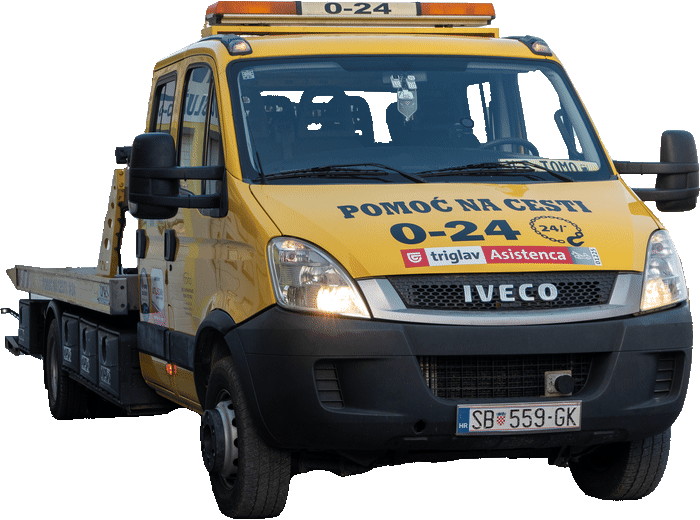
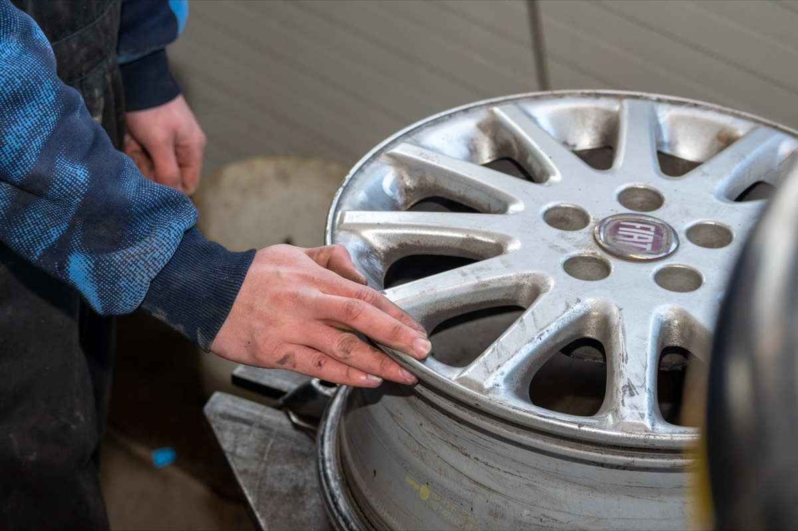
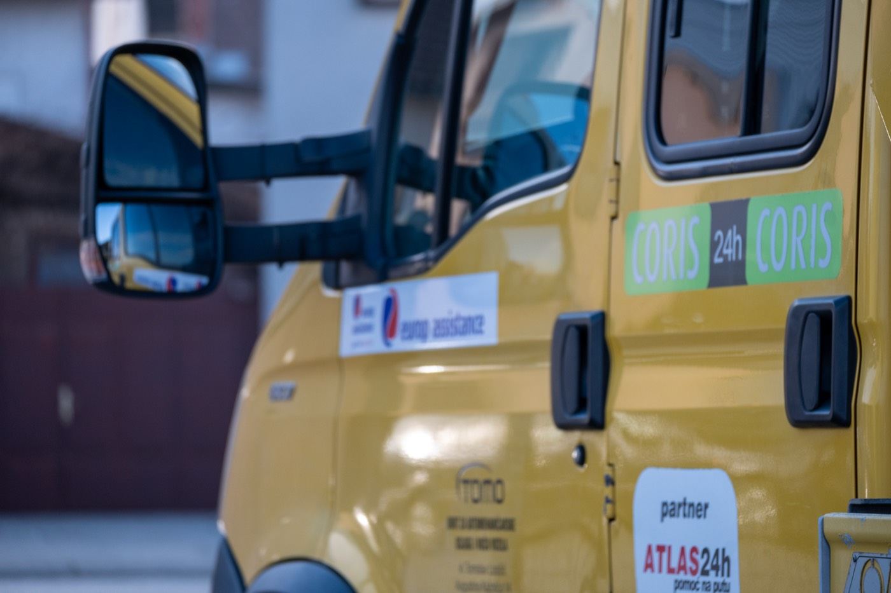
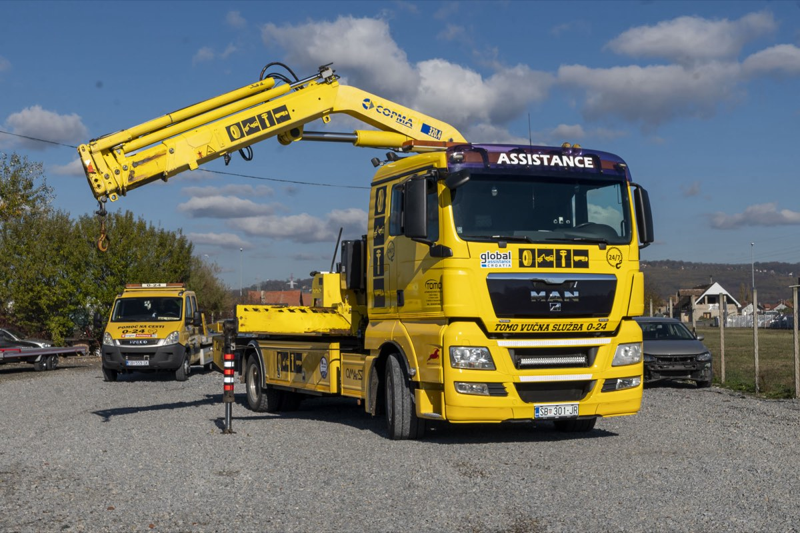
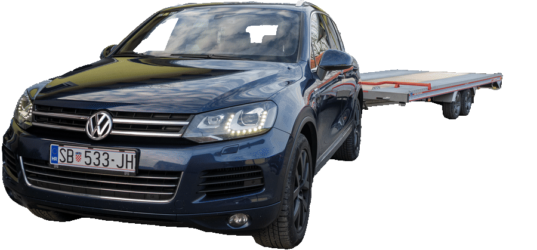
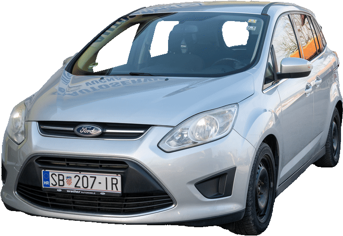
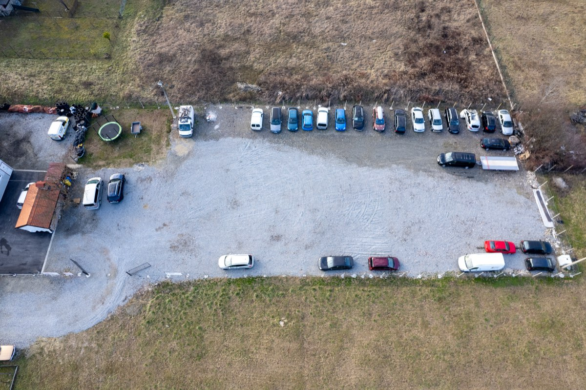

Kompletna usluga za vaša vozila
Od redovnog održavanja i dijagnostike do vučne službe, kamiona s kranom, prijevoza putnika i vozila, najma i osiguranja – sve na jednoj adresi, Augustina Kažotića 14.

Redovno održavanje i servis
Sve što je potrebno za sigurno i pouzdano vozilo – za osobna i laka teretna vozila, na jednom mjestu.
- Brzi servisiZamjena ulja, filtera, svjećica i ostalih potrošnih dijelova za optimalan rad motora.
- Priprema vozila za tehnički pregledDetaljan pregled vozila i otklanjanje potencijalnih problema prije odlaska na tehnički.
- Dijagnostika vozilaKompjuterska dijagnostika za brzo otkrivanje kvarova na elektronici i mehanici.
- AutoelektrikaZamjena akumulatora, alternatora, senzora, kontrolnih jedinica i ostalih električnih sustava.
- Mehanički popravciPopravak motora, mjenjača, spojke, ovjesa, kočnica i ostalih ključnih komponenti.
- Teretni programServis i održavanje kombi vozila i lakih teretnih vozila.


Auto klime
Redovito održavanje auto klime osigurava dugotrajan rad sustava i zdrav zrak u vozilu.
- Punjenje i dopuna plinaPravilna količina rashladnog sredstva za optimalan rad klima uređaja.
- Dijagnostika i popravak curenjaPrecizno otkrivanje i rješavanje gubitka rashladnog sredstva.
- Čišćenje i dezinfekcijaUklanjanje bakterija, gljivica i neugodnih mirisa iz ventilacije.
- Kompresor i komponenteKvarovi na kompresoru, ventilatorima, isparivaču i kondenzatoru.
- Filter klimePregled i zamjena filtera za čist zrak u kabini.
Vulkanizacija
Sigurna i stabilna vožnja u svim uvjetima. Pravilna briga o gumama produžuje im vijek i povećava sigurnost.
- Montaža i balansiranje gumaPrecizno postavljanje za maksimalnu stabilnost na cesti.
- Geometrija kotačaProvjera i podešavanje za pravilno trošenje guma i bolju upravljivost.
- Popravak gumaKrpanje probušenih pneumatika i manja oštećenja.
- Prodaja gumaNove i rabljene, ljetne, zimske i cjelogodišnje gume.


Vučna služba i pomoć na cesti
Dostupni 0–24. Nalazimo se „tik” do ulaza na autocestu i tu smo u roku par minuta.
- Vučna služba 0–24Spremni u bilo koje doba dana i noći.
- Transport svih vrsta vozilaOsobna vozila, kombiji, motocikli, laka teretna vozila.
- Pomoć na cestiDostava goriva, zamjena kotača, manji popravci na licu mjesta.
- Izvlačenje iz jarka, blata i snijegaSpecijalizirana vozila za zahtjevne situacije.
- Prijevoz na tehnički pregled ili servisSiguran i brz transport vašeg vozila.
Kamion s kranom
Dizanje i premještanje vozila, strojeva i tereta. Automobil koji je sletio s ceste, neispravno vozilo koje treba podići ili zahtjevniji transport – sigurno rješenje 0–24 h, na području Slavonskog Broda i cijele Slavonije.
- Rad s kranomZa osobna i dostavna vozila.
- Teški uvjetiDizanje i prijevoz kad obična vučna ne može.
- Građevinske i transportne potrebePremještanje strojeva i tereta.


Prijevoz putnika i tereta
Transferi, poslovna putovanja i obiteljski izleti u vozilima Mercedes Vito i Ford C-Max. Prijevoz vozila, kombija, traktora, priključnih strojeva i druge mehanizacije – siguran utovar, prijevoz i istovar.
- Ford C-MaxZa manje grupe do 7 putnika, za kraće i srednje relacije.
- Volkswagen Touareg + autoprikolicaPutnici i dodatni teretni kapacitet u jednoj vožnji.
- Prijevoz tereta vučnom službomNeispravna vozila, specijalni tereti i hitne intervencije.
Rent a car
Pouzdan rent a car u Slavonskom Brodu – za poslovni put, obiteljski odmor ili posebne prilike.
 Škoda OctaviaProstrana i štedljiva, veliki prtljažnik.
Škoda OctaviaProstrana i štedljiva, veliki prtljažnik.
Ford C-Max, 7 sjedalaZa veće obitelji i grupna putovanja.

Osiguranje uz UNIQA
Kod nas možete jednostavno dogovoriti UNIQA osiguranje i osigurati se od nepredviđenih situacija na cesti.
- Osiguranje vozilaSudar, krađa i vandalizam, elementarne nepogode.
- Kasko osiguranjePokriće bez obzira na to tko je odgovoran za štetu.
- Osiguranje putnikaZa vozače i suputnike, bez obzira tko je vlasnik vozila.
- Osiguranje prijevoza teretaZa domaći i međunarodni prijevoz vozila, robe i strojeva.